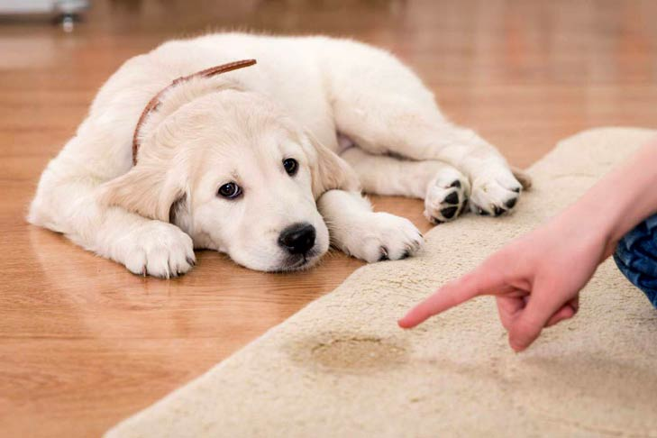
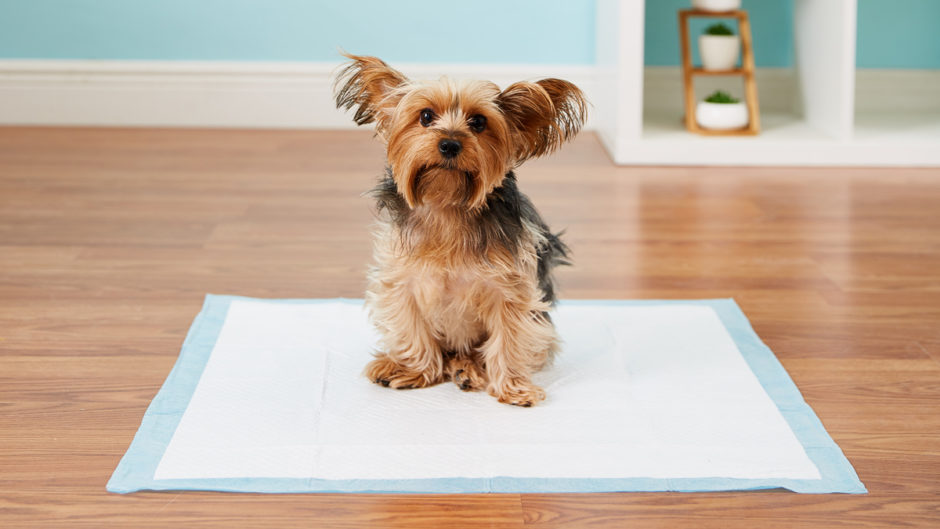
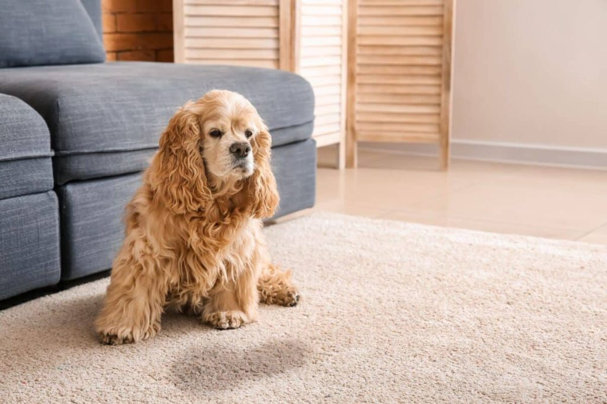
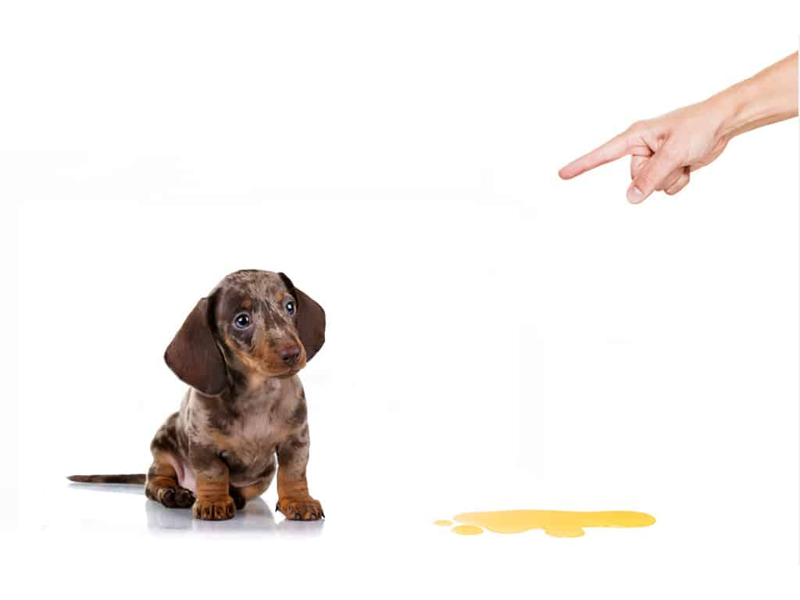
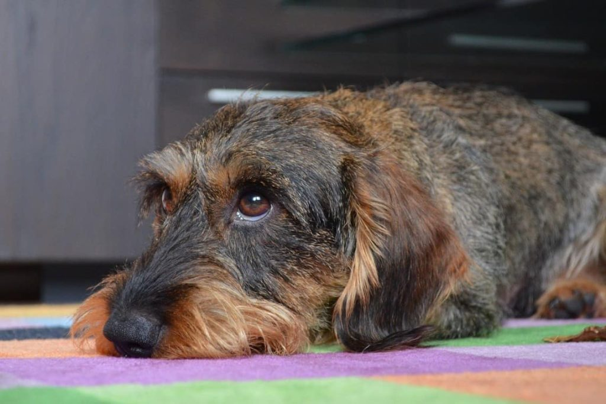
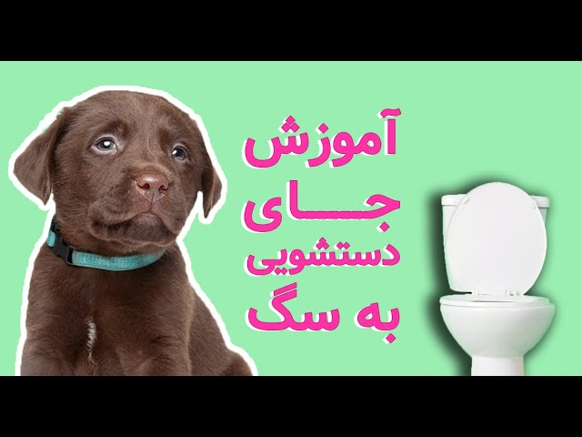
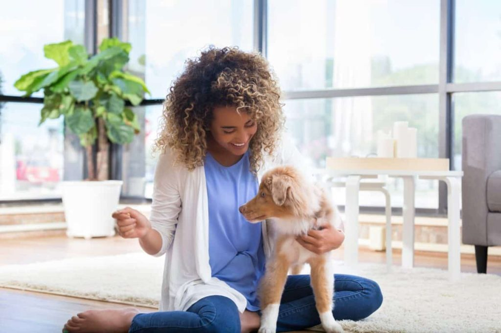

همیشه آموزش و تربیت توله سگها سخت بوده و نیاز به زمان و صرف انرژی داشته. وجود تمرینهای متفاوت این موضوع رو پیچیدهتر هم کرده. اما یکی از این تمرینهای مهم، آموزش دستشویی به سگ هست. آموزش دستشویی سگ؛ نیاز به صبر، حوصله و تمرین زیاد داره؛ اما کار غیر ممکنی نیست. معمولا تربیت سگ برای دستشویی برای تازه کارها، پیچیده و کسل کننده هست. با این حال اگر درست و اصولی مراحل تمرین و آموزش سگ اجرا شود، نتیجه به سرعت خودش نشون میده و سریعا میتونید از این مرحله آموزشی با خیال راحت رد بشین.
خیالت راحت ما این راهو بلدیم، پس در ادامه با ما در پت پرس همراه باشید تا در مورد نحوه تربیت و آموزش سگ برای دستشویی بیشتر صحبت کنیم.

اهمیت تربیت سگ برای دستشویی
آموزش دستشویی به توله سگ در مکان و زمان درست، یکی از مهمترین قدمها در نگهداری و تربیت سگ به حساب میاد. متاسفانه خرابکاری سگها و دستشویی کردن در نقاط مختلف خونه (روی فرش، مبل و …) یکی از دلایل رها شدن و بیخانمان شدن سگهاست.
قبل از اینکه سگتون رو به خونه بیارید باید تصمیم بگیرید که سگتون قراره داخل خونه دستشویی کنه یا بیرون و بعد سگ رو برای اون کار تربیت کنید.
هر کدوم از این دو مزایا و معایب خودشون رو دارن و به سبک زندگی شما، وقتی که برای سگ دارید، آب و هوا و سرمای هوا و … بستگی داره.
از چه سنی آموزش دستشویی به توله سگ رو شروع کنم؟
بنا به توصیه دامپزشکان و وبسایت معتبر کنل کلاب (AKC)، بین سنین ۱۲ تا ۱۶ هفتگی میتونید تربیت توله سگ برای دستشویی رو شروع کنید. در این سن توله کنترل کافی روی حرکت روده و مثانهش داره و میتونه نگه داشتن دستشویی رو یاد بگیره.
اگه تولهتون رو بعد از ۱۲ هفتگی به خونه آوردید و تو باکسش جیش میکنه (یا احیانا مدفوعش رو میخوره)، هنوز هم میتونید بهش دستشویی در جای مناسب رو یاد بدید اما روند آموزشش کمی طولانیتر خواهد شد.
اگه سگ بالغ و بزرگسالی رو به خونه آوردید که هنوز این آموزش ابتدایی رو خوب یاد نگرفته کار کمی سختی پیش رو دارید.
البته با صبر و حوصله و روش درست میتونید هر سگی رو تربیت کنید، اما سگ بزرگسالی که قبلا در جاهای مختلف و با تربیتهای مختلف زندگی کرده کمی آموزشش سختتره و نیاز به زمان بیشتری داره.
آموزش دستشویی به سگ تازه شروع مسیر تربیت سگه!
کیه که دوست نداره سگش خوش رفتار، باتربیت و حرف گوش کن باشه؟
داشتن یه سگ خوش رفتار و باتربیت، نیازمند اینه که آستین ها رو بالا بزنین، تربیت سگ رو یاد بگیرین و بعدش با سگتون حسابی تمرین کنین. شاید این کار اولش سخت به نظر بیاد، ولی نتیجه اش اونقدر خوب خواهد بود که ارزش همه چالشها و زحمتها رو داره.
پت پُرس برای شما یه ایبوک جامع و کامل آماده کرده که با خوندنش و عمل به دستورات داخل کتاب، میتونین یه سگ حرف گوش کن و دسته گل داشته باشین. هرجا هم به مشکلی برخوردین، میتونین با استفاده از سرویس دامپزشک آنلاین، سوالاتتون رو از مربی تربیت سگ بپرسین.
برای آموزش سگ به شیوه درست باید بدونین چه موقع، کجا، چه رفتاری رو چه جوری بروز بدید که سگ ببینه و ازش یاد بگیره. این ایبوک قدم به قدم و کاربردی به شما یاد میده از روز اول با سگ چه جوری رفتار کنین و چه چیزهایی رو یادش بدید و کمک میکنه یه سگ با تربیت و خوش رفتار تحویل جامعه بدید 

آموزش دستشویی توله سگ چقدر طول میکشه؟
مدت زمان آموزش و تربیت سگ برای جای دستشویی به عوامل مختلفی مثل سن، تاریخچه یادگیری قبلی و متد و روش آموزش شما بستگی داره.
آموزش یه توله سگ ۳ ماهه با آموزش توله ۵ ماهه فرق داره. بعضی تولهها تنها بعد از چند روز آموزش به سرعت یاد میگیرن، اما بعضی دیگه به چندین ماه آموزش و تمرین نیاز دارن؛ به ویژه اگه قبل از این که پیش شما بیاد پیش سرپرست بدی بوده باشه.
یا حتی ممکن است صاحب قبلی سگ به دلیل تنبلی از پوشک سگ به جای آموزش دستشویی استفاده کرده باشه. استفاده از پوشک در موارد خاص و البته در دوره ای کوتاه استفاده میشه. اگه قصد دارید از پوشک استفاده کنید بهتره قبلش بدونین کاربردش چیه و اینکه استفاده غلط ازش چه عواقبی داره. پیشنهاد میکنم مقاله «پوشک سگ» بخونین.
با صبر و حوصله و استمرار در تمرینها هر سگی میتونه دستشویی کردن در جای مشخص رو یاد بگیره.
توانایی کنترل مثانه به عواملی مثل سایز، نژاد و سن سگ هم بستگی داره. به طور مثال، نژادهای کوچک مثانه کوچکتر و متابولیسم و سوخت و ساز بیشتری دارن و به دفعات بیشتری نیاز به ادرار کردن دارن.
همین طور شرایط و محیط زندگی قبلی سگ هم تاثیر زیادی در یادگیری دستشویی داره. مثلا اگه سگتون قبلا آموزش اشتباهی دیده باشه اصلاح رفتارها و عادتش به زمان بیشتری نیاز خواهد داشت.
از روز اولی که آموزش دستشویی به توله سگتون رو شروع میکنید حواستون باشه که بعد از چرت زدن، بازی کردن، غذا خوردن و هرفعالیت دیگهای اونو به محل توالتش ببرید.

مراحل آموزش دستشویی سگ در آپارتمان و خانه
اکثر ماها که تو آپارتمان زندگی میکنیم و سگ آپارتمانی داریم ترجیح میدیم سگمون رو برای دستشویی کردن داخل آپارتمان تربیت کنیم. برای این کار دو نکته رو لازمه بدونید:
- مربیان سگ توصیه میکنن که تا وقتی توله سگتون کاملا دستشویی کردن در جای مشخص رو یاد نگرفته فعالیتش رو تو محیط خونه محدود کنید. (با استفاده از پارک سگ، قلاده بستن یا گذاشتن تو یه اتاق).
- به مرور که سگتون آموزشهاشو یاد گرفت میتونید آزادی عمل بیشتری بهش بدید و اجازه بدید که راحت تو خونه و آپارتمان بچرخه.
یه جای مشخص از خونه (یا بالکن یا حیاط) رو برای دستشویی کردن انتخاب کنید و حتی الامکان تغییرش ندید؛ چون باعث گیج شدن سگتون میشه.
- در فواصل منظم توله سگتون رو به محل توالت ببرید. تقریبا هر ۲ ساعت یک بار و بلافاصله بعد از بیدار شدن، در حین و بعد از بازی کردن و بعد از غذا خوردن و آب خوردن.
- تشویق کردن رو فراموش نکنید. هربار که سگتون شروع به دستشویی کردن در جای مشخص کرد از یه کلمه یا جمله استفاده کنید (مثلا بهش بگید «آفرین»، «جیش کن» و …) و بعد بهش تشویقی بدید. (تشویقی سگ)
- شبها ظرف آب توله سگ رو بردارید. حدودا ۲-۳ ساعت قبل از خواب ظرف آبش رو بردارید تا احتمال ادرار داشتن در طول شب رو کاهش بدید. اکثر توله سگها میتونن ۷ ساعت بدون نیاز به دستشویی بخوابن.
- زمانبندی مشخص و دقیقی برای غذا دادن به توله سگ داشته باشید و هربار باقی مونده غذا رو بعد از ۲۰ دقیقه بردارید. تولهها با توجه به سنشون به ۳ الی ۴ بار غذا در روز نیاز دارن.
- اینکه هر روز سر ساعت مشخصی به سگتون غذا بدید باعث میشه به مرور زمان دستشویی کردنش هم منظم بشه و راحتتر بتونید بهش آموزش بدید.

آموزش دستشویی به سگ با پارک
پارک سگ فضایی نسبتا بزرگه که میتونید یه طرفش جای خواب و ظرف آب و غذای سگ رو بذارید و یک طرفش هم پد ادرار و توالت سگ رو.
برای اینکه با پارک سگ و کاربردهای زیادی که در تربیت سگ داره آشنا بشید مقاله «پارک سگ» رو مطالعه کنید.
سگها دوست دارن جایی که میخوابن دستشویی کنن، بنابراین پارک سگ باید به اندازهای باشه که با فاصله مناسبی ازش پد ادرار یا توالت سگ رو قرار بدید.
اگه برای بازی یا غذا خوردن توله رو بیرون آوردید بلافاصله بعد از این کارها اون رو به محل پد ببرید و با تشویق کلامی (مثلا «جیش کن») اون رو به دستشویی کردن ترغیب کنید.
برای اینکه توله سگ به دستشویی کردن روی پد یا توالتش عادت کنه میتونید از قطرههای تعلیم ادرار استفاده کنید. این قطرهها بوی خاصی شبیه به ادرار و مدفوع سگ دارن و سگ با بو کردنش میفهمه که اینجا محل دستشویی کردنه.
وقتی توله سگ موفق شد تو پارک رفتار خوبی داشته باشه و فقط روی پد یا توالتش دستشویی کنه وقتشه که کم کم بهش آزادی عمل بدید و با محیط خونه آشناش کنید.
به تدریج روزی ۱۰-۲۰ دقیقه توله سگ رو بیرون از پارک سگ بیارید تا در نهایت بتونید بهش اعتماد کنید و بذارید هرجای خونه که دوست داشت بره.
البته در تمام این مدت باید نظارت و کنترل روی رفتارهاش داشته باشید و هربار که احساس کردید توله سگ نیاز به دستشویی داره اون رو به سمت پد یا توالتش هدایت کنید.
استفاده از باکس و قفس برای این آموزش
کسانی که تا حالا تجربه نگهداری از سگ نداشتن و برای اولین بار سگ آوردن ممکنه به نظرشون تو قفس گذاشتن سگ کاری ظالمانه و بی رحمانه برسه.
در روند تربیت سگ برای دستشویی میتونید از باکس هم استفاده کنید (حداقل برای یه مدت کوتاه).
قفس فضای قابل کنترلی داره و میتونید کاملا روی رفتارهای سگ نظارت داشته باشید و با مشاهده علائم دستشویی داشتن میتونید نگه داشتن ادرار رو بهش آموزش بدید.
دلیل اصلی استفاده از باکس برای آموزش دستشویی اینه که سگها موجوداتی تمیز هستن و به هیچ وجه نمیتونن بوی ادرار و مدفوع رو در جایی که هستن تحمل کنن؛ به همین دلیل به طور غریزی تا وقتی تو قفس باشن دستشوییشون رو نگه میدارن.
ولی خب شما هم باید حواستون به سگتون باشه و دونستن این موضوع نباید باعث بشه زیاده روی کنید و بیش از حد توانش اونو تو باکس نگه دارید.
برای اینکه با انواع باکس و قفس سگ و انتخاب مناسبترین باکس برای سگتون بیشتر آشنا بشید مقاله «باکس و قفس سگ» رو مطالعه کنید.

موقع استفاده از باکس و قفس نکات زیر رو رعایت کنید:
- سایز و ابعاد قفس طوری باشه که توله سگ به راحتی بتونه توش بایسته، بچرخه و دراز بکشه؛ اما اونقدری هم بزرگ نباشه که از یه گوشهاش واسه دستشویی کردن استفاده کنه.
- هربار که سگ خودش تو باکس رفت بهش تشویقی بدید تا خاطره خوبی از تو قفس موندن پیدا کنه.
- اگه توله سگ رو برای مدتی بیشتر از ۲ ساعت تو قفس میذارید حواستون باشه که آب تازه در دسترس توله سگ وجود داشته باشه.
- با مشاهده نشانههای دستشویی داشتن سگ، اونو بلافاصله بیرون بیارید و به محل مخصوص توالت (داخل خونه یا بیرون) ببرید.
- اگه توله سگ تو قفس جیش کرد دیگه از قفس برای آموزش توالت استفاده نکنید.
جیش کردن تو قفس چند معنی میتونه داشته باشه:
- ممکنه این عادت رو وقتی پناهگاه یا پیش صاحب قبلی بوده یاد گرفته.
- ممکنه به اندازه کافی بیرون نیاوردینش و اذیت شده.
- ممکنه سایر قفس زیادی بزرگ باشه.
- یا شایدم توله سگتون هنوز خیلی کوچولوئه و نمیتونه ادرارش رو نگه داره.

نظارت بر رفتار و نشانه های دستشویی داشتن سگ
در روند آموزش دستشویی رفتن به سگ تا جایی که ممکنه باید جلوی خرابکاری سگ در جای نامناسب رو بگیرید.
تا وقتی که آموزش دستشویی به توله سگ ادامه داره بهتره فعالیتش تو خونه رو محدود کنید و قلادهاش رو با یه بند قلاده حدودا ۲ متری به مبل یا جایی نزدیک خودتون متصل کنید.
بعد همونطور که دارید کار خودتون رو میکنید حواستون به نشانههای دستشویی داشتن توله سگ هم باشه.
برخی علائم دستشویی داشتن سگ عبارتند از:
- پارس کردن
- ناخن کشیدن روی در
- چمباتمه نشستن
- بیقراری
- بو کشیدن زمین
- دور خودش چرخیدن
هرموقع این نشونهها رو دیدید بلافاصله بند قلادهش رو بگیرید و به محل مخصوص دستشویی کردن ببریدش.
اگه توله سگتون همونجا کارش رو انجام داد با لحن خوشحال بهش بگید «آفرین!» و بهش خوراکی تشویقی بدید.
البته گاهی اوقات سگتون از خودش نشانههای خاصی رو بروز نمیده، اما متوجه میشید که یه جایی کار خرابی کرده. این مورد میتونه دلایل مختلفی داشته باشه. بی اختیاری ادرار سگ میتونه گاهی اوقات شما رو متعجب کنه و فکر کنید هرچی آموزش دادید بینتیجه بوده. اما اینطور نیست؛ ادرار بی اختیار سگ میتونه به خاطر ترس، خوشحالی و حتی برای تعیین قلمرو باشه. شما باید بتوانید این رفتارها و نشانهها را به خوبی تشخیص بدید و از بروزش جلوگیری کنین.

یادتون باشه که خرابکاری ممکنه بارها پیش بیاد …
هرچقدر هم درست و اصولی به سگتون آموزش بدید باز هم تا زمانی که کامل دستشویی کردن در جای مشخص رو یاد بگیره ممکنه چند باری خرابکاری کنه. این اتفاق کاملا نرمال و طبیعیه و بخشی از روند آموزش سگه.
اگه متوجه شدید سگتون داره جای نامناسبی دستشویی میکنه این کارها رو انجام بدید:
- حین دستشویی کردن مداخله کنید و نذارید کامل کارش رو انجام بده
- یه صدای ناگهانی ایجادکنید (محکم دست بزنید) تا حواس سگتون از دستشویی کردن پرت بشه (البته مراقب باشید سگتون رو نترسونید) یا بهش بگید «برو بیرون!» و بلافاصله به جای مخصوص دستشویی کردن ببریدش.
- بعد اگه ادامه دستشویی کردنش رو تو جای مشخص انجام داد تشویقش کنید و بهش خوراکی بدید.
- میدونم سخته اما هیچ وقت توله سگتون رو به خاطر خرابکاری و دستشویی کردن تو خونه دعوا و تنبیه نکنید!
- اگه متوجه روی فرش یا جای دیگه جیش کرده دیگه کار از کار گذشته و سگتون نمیتونه ارتباطی بین تنبیه شدن و کاری که قبلا کرده برقرار کنه؛ پس فقط اونجا رو کامل تمیز کنید.
- با کمک اسپری پاک کننده مخصوص آنزیمدار محل لکه رو کاملا تمیز کنید تا کاملا بوی ادرار و مدفوع رو از بین ببره. چون اگه سگتون بوی ادرار یا مدفوع رو متوجه بشه ترغیب میشه که دوباره اونجا دستشویی کنه.

رفتارهای اشتباه در آموزش دستشویی به سگ
متاسفانه بعضیها بینی سگ رو به ادرارش میمالن یا سرش داد میزنن و فکر میکنن اینطوری دیگه سگ خرابکاری نمیکنه! اما این کارها تنها باعث میشه سگتون از شما بترسه و اتفاقا از دستشویی کردن در حضور شما فراری بشه.
خیلی مهمه که با نظارت و مراقبت و دونستن نشونههای دستشویی داشتن، احتمال خرابکاری سگتون رو به حداقل برسونید. چون اگه تعداد خرابکاریها زیاد بشه باعث سردرگمی و گیجی سگتون میشه و سگتون دیگه نمیدونه کجا جای مناسبی برای دستشویی هست و کجا نباید کارش رو انجام بده.
پد ادرار یا توالت سگ رو هربار بعد از ادرار یا مدفوع کردن تمیز/تعویض کنید.

ویدیوی آموزشی تربیت سگ برای دستشویی
ما در این مقاله سعی کردیم نکاتی که برای آموزش دستشویی سگ لازمه بدونید رو بهتون بگیم. اما در کنار مطالعه، گاهی تماشای چند دقیقه فیلم و ویدیوی آموزشی تاثیر بیشتری روی ما میذاره و بیشتر میتونیم ازش یاد بگیریم. درسته؟
تیم پت پرس علاوه بر مقالات و کتاب های الکترونیکی، ویدیوهای آموزشی و جذاب زیادی در مورد حیوانات خانگی تولید میکنه. فیلم آموزش دستشویی به سگ هم یکی از پرطرفدارترین ویدیوهای ما در یوتیوبه و در چند دقیقه شما را با کلیت آموزش توالت سگ آشنا میکنه.
این ویدیو رو میتونید از طریق لینک زیر در یوتیوب تماشا کنید و اگه دوست داشتید کانال پت پرس در یوتیوب رو هم سابسکرایب کنید و اونجا هم همراه ما باشید.
تماشای ویدیوی آموزش دستشویی سگ در یوتیوب

چرا سگ کوچولوی من همه جای خونه جیش میکنه؟
این مشکل بین سگهای عروسکی و مینیاتوری شایعه. خیلی از مربیای سگ توصیه میکنن که سگهای عروسکی بهتره داخل خونه دستشویی کنن. علاوه بر پدهای ادرار، توالت و سینی ادرار سگ هم وجود داره که میتونید برای آموزش دستشویی داخل خونه ازشون استفاده کنید.
تهیه سینی ادرار یا توالت سگ و آموزش دستشویی کردن داخل توالت میتونه برای رفع این مشکل بهتون کمک کنه.
چرا سگم مدام میره جایی که دفعه قبل خرابکاری کرده دستشویی میکنه؟
احتمالا دلیل این کار اینه که خوب اون قسمت رو تمیز نکردید و مقداری از بوی ادرار یا مدفوع باقی مونده. برای تمیز کردن ادرار یا مدفوع سگ از تمیزکننده آنزیم دار مخصوص استفاده کنید تا مطمئن بشید کاملا بو از بین رفته.
واقعا آموزش دستشویی سگ سخته؟
توله سگها هم مثل نوزادهای تازه متولد شده نیاز به مراقبت و آموزش دارن و این شما هستید که باید اونا رو آموزش بدبد. پس همونطور که به بچههای رنج ۲ تا ۴ سال یاد میدید که چطور دستشویی شون بگن؛ به سگها هم باید یاد بدید تا زمانی دستشویی دارن به شما اعلام کنن. آموزش دستشویی سگ پروسه پیچیده ای نیست و نیاز به کمی صبر، حوصله و تمرین زیاد داره. پس موقع تربیت سگ برای دستشویی این موارد رو همیشه در ذهنتون داشته باشین تا نتیجه بهتری بگیرید.خوب شما برای تربیت سگتون برای دستشویی چه کارهایی کردید؟
شما سگتون رو برای دستشویی بیرون از خونه میبرید یا داخل خونه از پد و توالت سگ استفاده میکنید؟ چطوری به سگتون دستشویی کردن در جای مشخص رو یاد دادید؟ با چه مشکلات و سختیهایی روبرو شدید؟ لطفا برای ما کامنت بذارید و نظر، تجربیات و سوالات خودتون رو با ما در میون بذارید. ما در اسرع وقت به سوالات شما پاسخ میدیم.
سلام دوستان عزیزم
من اومدم که بهتون چند تا نکته در مورد اینکه مامان و باباهاتون نمیزارن سگ بیارین بگم
۱_فکر نکنید که سگ خریدن اینه که باهاش بازی میکنینو خوشگلیاشو میبینید(من خودم۲سال طول کشید که مامان وبابام رو برای این سگ خریدن راضی کردم) سگ دردسر داره و شاید ۱ماه طول بکشه که کلمه بشین رو یاد بگیره.تربیتش سخته و شاید مجبور بشید مربی بگیرید
۲هزینش زیاده(فقط۳دوز واکسنش ۹۰۰ هزار تومن کم کمه)(و هر ۳ماه یکبار باید ببریدش دامپزشکی که هزینه ویزیت ۶۰تومنه کم کم)(وسایل جانبیش هست ۱میلیون اگه بخواید متوسط هزینه کنید)
۳سگ ریزش مو داره مثل ما انسان ها موهاش میریزه(دربعضی از نژاد ها کمتر و در بعضی بیشتره
۴باید کارهای بهداشت سگ رو خودتون انجام بدید
(مثل:ناخن گرفتن،شانه کردن مداوم مو،حمام بردن،،،،،)
۵همینطور که در مطلب اشاره شد:سگ های ماده پریود میشن(خون ریزی و ترشحات دارن و این ترشحات روی مبل و شندلی و فرش ممکنه بریزه،ممکنه پرخاشگر بشه و از شما فاصله بگیره)سگ های نر اماده برای جفتگیری میشن(دنبال سگ های ماده میگردن،ممکنه با ادرارشون رو جای دیگه بکنن،پرخاشگر بشن و روی وسایل دیگه خونه سوار بشن) و خیلی چیزای دیگه
خواهش میکنم اول فکر کنید و بعد تصمیم به گرفتن سگ کنید.سگ خریدن مثل داشتن یه بچه است که هیچ وقت از ۲،۳ سال بزرگتر نمیشه
اما این رو هم بگم که سگ خریدن خوبی خودش رو هم داره
۱_سرتون حسابی گرم میشه(واینم بگم که نمیشه سگ رو برلی مدت طولانی تنها گذاشت مثلا نمیشه یک شبانه روز تنهاش بزارین)
۲شاید کمی بتونه جای خواهر یا برادرتون رو پر کنه و تمرین خوبی برای نگهداری از یک بچه است(فراموش نکنید که هرچی باشه اون یه حیوونه پس توقع نداشته باشید جای بچه انسان رو براتون پر کنه)
۳_باعث بهتر شدن روحیه تون میشه
۴_یه دوست وفادار عالیه و تربیت پذیره
۵_عمرنسبتا زیادی داره(سگ ها بین ۱۰ تا۱۵ سال عمر میکنن اما هرسال اونا معادل ۷ سال ماست
یعنی وقتی یک ساله شدن انگار ۷ ساله شدن)
ویژگی های خوب یک سگ بیشتر روحیه و باعث میشه کمی سرگرم بشین
درمورد راضی کردن پدر مادر
۱_گریه نکنید چون هیچی درست نمیشه
۲_خوب فکر کنید و ببنید میتونید از پسش بربیایند
۳_حالا شروع کنید
مراحل:
۱_خونه رو حسابی تمیز کنید.
۲یه عصرانه خوب بچینید( کاپوچینو با بیسکوییت،،،)
۳_یه لباس خوب بپوشید
۴_پدر و مادرتون رو با عصرانه تون سوپرایز کنید
۵_بعد درحین خوردن عصرانه بحث سگ رو وسط بکشید
۶_دلایل خودتون رو برای سگ داشتن توضیح بدین
۷اگر آن ها مخالف بودن دلیل مخالف بودن آن هارا بپرسید و آن هارا توجیح کنید
(قبل از اینکار درخواست خودرا مطرح کنید و روی پدر و مادرتان کار کنید و حداقل ۲ماه بعداز درخواست اینکار را انجام دهید)
سلام من تا دو هفته دیگه دارم یه سگ هفت ماهه نژاد شیتزو ب خونم میارم ولی در مورد تربیت صاحب قبلش چیزی نمیدونم من خودم بیشتر روز هارو میرم خونه مادرم به نظرتون از چه روشی استفاده کنم تا با شرایط خونه جدیدش کنار بیاد وقتی خونه مادرم میرم گیج نشه هم خونه من هم خونه مادرم حیاط داره به نظرتون روش بردن
معذرت میخوام دستم خورد ارسال شد همونطور که میگفتم به نظرتون بهتزین روش چیه اینکه ببرمش به حیاط بیرون عادت کنه یا روش های دیگه مناسب خیلی ممنون میشم راهنماییم کنید واقعا گیجم
سلام یاسمین عزیز
ما برای این موضوع یه کتاب جامع تدوین کردیم که از تولگی تا بزرگسالی اموزش و تربیت سگ و تمام چالش های اونو بررسی کردیم
میتونی به بخش کتاب تربیت سگ مراجعه کنی
سلام دوستان من میخاستم بدونم که چطور به سگم ادرار کردن رو یاد بدم ، کاملا مدفوع رو بلده اما ادرارش رو توی سینی ادرار نمیکنه و روی زمین میریزه.یک ماه و ۱۰ روزشه شیتزو کراس وزنشم یک کیلو و صد گرم . ممنون اگه پاسخ بدید
سلام گلسانا جان
توی این سن خطای ادرار خیلی طبیعیه باید حتما باهاش با آرامش برخورد کنیو هربار که توی سینی ادرارش اینکارو کرد تشویقش کنی
البته توی کتاب تربیت سگ هم روش مناسب اینکار و آموزش های دیگه رو برات گذاشتیم
سلام ،درود بر شما من یه سگ حمایتی دارم که از بد سرپرست نجاتش دادم و بدلیل ازار و تخریب زیاد این بچه خیلی زشت و لاغر شده بود ،کلا ۴ کیلو نمیشد اولش ،کسی قبولس نمیجرد به سرپرستی ،خودم اوردمش خونه،و حالا فوق العاده شده ،۱۳ کیلو شده ،تقریبا نژاد متوسط حساب میشه ،خیلی بزرگ نیست خیلیم کوچیک نیست ،ولی کلی کتک خورده شکنجه دیده ،تمام تنش پر از زخم جراحت بود ، ،با اب جوش سوزونده بودنش و بشدن شکنجه شده بود حتی بیضه هاش سوخته بود،،،حالا خدارو شکر عالیه حالش و خیلیم باهوشه و همه چیو با یکی دوبار در جا یاد میگیره ،اما عادت به دسشویی کردن بیرون از خونه داره هر کاری بلد بودم کردم ،اما موفق نشدم ،،چیکار کنم تو خونه جیش و توالت بکنه ،،،چون بچه سختشه ،مخصوصا الان که نمیتونیم ببریمش بیرون از ترس گرفتن به دست مامورا خداییش یه کمک به من بکنید ،من سراغ هر کی رفتم گفت نمیتونم نمیدونم بلد نیستم ،نمیشه
سلام جناب شیری عزیز
واقعا ممنونیم از شما دوست مهربان که از سگی با اون شرایط حمایت کردید
برای یادگیری اموزش دستشوییش میتونید از کتاب جامع تربیت سگ استفاده کنید
یا برای شرکت در دوره های اموزشی ما با پشتیبانی تماس بگیرید
سلام منون از توضیحاتتون مفید بود ولی من یک سوال دارم سگ من ماده است و سه ماهش موقعی که نشون میده دستشویی داره من وقتی برش میدارم و به محل دستشویی خودش میزارمش حتی اگه موقعی هم که داشته دستشویی میکرده من برش میدارم میزارم رو محل دستشویی خودش دستشویی نمیکنه و بعد از چند دقیقه که میاریش بیرون بیرون از جای دستشوییش دستشویی میکنه من باید چه کاری انجام بدم ممنون میشم راهنمایی کنید 🙏🏻🙏🏻
اونقدر منتظر بمونید تا همونجا دستشویی کنه. حتی تا نیم ساعت هم ممکنه طول بکشه
محل جای دستشویی رو هم لازمه درست انتخاب کنید
سلام دوست عزیز ممنون از توضیحات مفید بود ولی من یک سوال دارم که چطور به سگ باید یاد که از روی مدغوع رد نشود؟
سلام آوا جان
برای آ»وزش این کار بهتره از فرمان های “نکن” استفاده کنی. اگه سگت هنوز این فرمان رو بلد نیست از کتاب تربیت سگ کمک بگیر
من سگم جای خوابش توی اتاق خوابمه ولی میخوام بهش یاد بدم که توی حموم یا توی بالکن روی پدش ادرار کنه ولی حس میکنم نشدنیع میشه بگید باید چیکار کنم؟؟؟
سلام دوست عزیز
هیچ غیر ممکن و نشدنی توی تربیت و آموزش سگ وجود نداره.
قطعا با صبر و تمرین و تکرار و مرحله به مرحله پیش رفتن به نتیجه میرسی.
اگه دوس داشتی میتونی توی بخش دانلود کتاب تربیت سگ بری و کتاب رو تهیه کنی تا آموزش رو اصولی یاد بگیری.
سلام خسته نباشید
چگونه به سگ خود استفاده از توالت فرنگی رو یاد بدیم توالت فرنگی در حیاط و کنار لونشه گه کارش رو اونجا انجام بده و رو سیفون پا بزاره که مدفوع تمیز شه
سلام دوست عزیز . شما برای آموزش دستشویی میتونین از پارک سگ در گوشه ای از حیاطتون استفاده کنین که مطالعه ی مقاله استفاده از پارک سگ راهنماییتون میکنه.
ببخشید میشه یک نژاد سگ بم معرفی کنید که خیلی زود جای دستشویی رو یاد بگیره؟
من کتاب تست نژاد سگ رو دیدم ولی این معیارو نداشت ممنون
سلام آیدا جان،
نژادهای معرفی شده در ادامه تست رو مطالعه کنین سطح یادگیریشون هم توضیح داده شده.
سلام☺️
همیشه دوس داشتم یه سگ داشته باشم🙃
اما تا الان که سیزده و نیممه نتونستم خانوادمو راضی کنم🧚♀️
ولی خب همیشه در حال مقاله خوندن راجب سگ ها و گربه ها هستم😅
ممنون میشم یه مقاله هم راجب راضی کردن پدر و مادر برای خرید حیوان خانگی در سایت قرار بدید👣💞
سلام زهرا جان
لازمه باهاشون مشورت کنین و دلیل مخالفتشونو بپرسین، دلایل خودتون و مسئولیتایی که قبول میکنین رو هم توضیح بدین تا درنهایت بتونین به یه نقطه اشتراکی برسین.
درست مثل من اگه راهی پیدا کردی به منم خبر بده اگه منم راهی پیدا کردم بت میگم
سلام به نظر من روش استفاده از پارک راحت تر وکاربردی تر هست
ممنون از راهنمایی هاتون